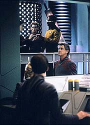
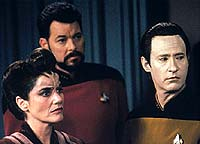
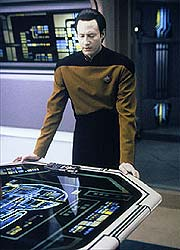
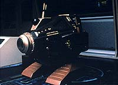

|
MANCHETE
DO EPISÓDIO
Bom tema
sobre a natureza da vida
se esvai em tratamento pouco inovador
Episódio
anterior | Próximo
episódio
Sinopse:
Data Estelar: 46307.2.
Geordi é designado para avaliar uma estação que está
desenvolvendo um novo sistema de mineração em Tyrus VII-A,
coordenada pela dra. Farallon, a cientista que inventou a
tecnologia. Quando um súbito problema ocorre na grade de força,
Farallon escolhe o momento de introduzir ao engenheiro da Enterprise
outro de seus inventos --o Exocomp. Trata-se de um aparelho que ela
construiu que é capaz de realizar reparos de forma inteligente.
Contrariando as possibilidades o engenho consegue conter a falha na
grade de força, salvando o projeto.
 Farallon vai a
bordo da Enterprise para explicar a situação. Ela tem a chance de
explicar os detalhes do funcionamento do Exocomp para Data,
enfatizando que seu invento não só cria as ferramentas adequadas
aos reparos, como pode resolver uma série de problemas. Isso
convence Picard a permitir que Farallon use o Exocomp para reparar o
sistema de mineração em dois dias, para uma demonstração. A
doutora pede a assistência de Data, que concorda imediatamente.
O engenho inicialmente conduz as tarefas sem falhas, mas, de uma
hora para outra, começa a não responder aos comandos da cientista,
momentos antes de uma explosão em um conduíte de plasma acontecer
na estação.
De volta à Enterprise, Farallon explica que o Exocomp passou por um
mau-funcionamento, tornando-se inútil. Ela e Geordi resolvem
continuar o trabalho com os dois Exocomps restantes, enquanto Data,
intrigado por uma máquina que, ao menos nos princípios básicos,
é similar a ele, leva o aparelho defeituoso para seus aposentos.
Ele fica surpreso quando, pouco tempo depois, o Exocomp conserta a
si mesmo. Quando Geordi e Farallon estão para sair e retornar ao
trabalho na estação, ele corre e pede que eles interrompam as
atividades. Os Exocomps estão vivos, segundo o andróide.
Em uma reunião com a tripulação sênior, Data explica que o
Exocomp se desligou instantes antes da explosão no conduíte de
plasma, indicando que as máquinas seriam capazes de auto-proteção.
A equipe testa a hipótese do andróide colocando a máquina em uma
simulação de perigo, e a tese de Data parece ser contestada quando
o Exocomp não foge do perigo e completa a tarefa a que tinha sido
designado. Mas Data segue irredutível, e, depois de repetir o
experimento diversas vezes, ele descobre que o Exocomp sabia que o
teste era só uma simulação e agiu de acordo.
 Picard,
Geordi e Farallon voltam a trabalhar na estação, mas logo
descobrem que o complexo perdeu confinamento interno e que eles estão
arriscados a serem varridos por perigosa radiação. Farallon e
diversos funcionários conseguem se transportar de volta à
Enterprise, mas Geordi e Picard ficam para trás. Sem outra solução,
Riker pede a Farallon que transporte os Exocomps para a estação
para salvar os homens. Ela concorda, mas Data se recusa a permitir
que ela o faça, travando os controles do transporte.
Dizendo não poder justificar o sacrifício de uma vida pela outra,
Data permanece firme. Riker consegue convencê-lo a ceder permitindo
que os Exocomps "escolham" se querem ou não arriscar suas
vidas. Para a surpresa de todos, os Exocomps surgem com seu próprio
plano, que salva Picard e Geordi e só exige o sacrifício de uma
das três máquinas. À tripulação resta apenas ponderar sobre o
que eles testemunharam, enquanto Data fica feliz em descobrir que pôde
agir como um protetor dessas exóticas "formas de vida".
Comentários:
"The
Quality of Life" é um episódio com um tema absolutamente
fascinante, mas que acabou sendo trabalhado de forma mundana e
previsível. Resultado: um dos segmentos mais esquecíveis do sexto
ano e, possivelmente, da série.
A idéia original da qual partiram os roteiristas era boa, no estilo
inconfundível dos high-concepts da Nova Geração: e se uma
máquina projetada para exibir inteligência e aprendizado acabar se
tornando algo que poderia ser definido como "vivo"? Qual
é o verdadeiro limite da definição, qual é a qualidade que
caracteriza a vida, qual a essência da vida? Essas são as
perguntas que o episódio tenta levantar.
Não é uma tentativa sem precedentes. "Evolution",
do terceiro ano, e "The Measure of a
Man", do segundo ano, em diferentes abordagens e com
diferentes graus de sucesso, tocaram o mesmo tema. Mas de fato não
o haviam esgotado --o fracasso aqui não é pela repetição, mas
pela inabilidade ao lidar com a premissa.
 Assim como nas histórias
predecessoras, Data é o veículo natural para o desenrolar dos
eventos. Mas sua atuação em "The Quality of Life"
deixa a desejar. Sim, ele faz tudo o que esperamos dele com relação
ao questionamento sobre o fato de o Exocomp estar ou não vivo, mas
é justamente isso que mata o episódio --tudo acontece exatamente
como deveria. E suas atitudes subsequentes beiram o absurdo.
Seria muito mais interessante se Data mantivesse o ceticismo com
relação ao caráter "vivo" do Exocomp e entrasse em
crise de consciência, questionando a partir disso até mesmo sua própria
natureza enquanto forma de vida. A discussão poderia realmente
passar pela questão do que é vida --algo que ninguém consegue
definir hoje em dia-- e terminar de forma ambígua, como a discussão
exige.
Em vez disso, Data não só abandona seu ceticismo científico e
abraça a causa de "salvador da pátria dos Exocomps",
chegando a ter atos de rebeldia e motim e quase provocando
indiretamente a morte de Picard e de seu melhor amigo, Geordi, em
nome de uma suposição. Um absurdo.
Para completar, no final, nossos brilhantes heróis decidem dar a
uma máquina que pode ou não estar viva, o direito de decidir se
quer se sacrificar. Se o fato de o organismo estar vivo já era
questionável, o fato de ser "sensciente", ou seja, capaz
de pensar e tomar decisões racionais, equilibrando com seu
"instinto", é um salto de imaginação ainda maior. Se os
Exocomps fossem vivos e inteligentes, não obedeceriam a sua
programação em nenhum momento; tomariam decisões sozinhos e se
rebelariam contra a exploração dos humanos sem a ajuda de Data,
como fizeram os nanites em "Evolution". O
roteirista aqui ficou perdidinho da silva com o assunto e se
embananou por completo na solução da trama.
 E se o
roteiro, em si, não foi feliz no tratamento do tema, a execução
então beirou o ridículo. Jonathan Frakes não foi particularmente
feliz na direção e é neste segmento que surge um dos "props"
menos convincentes de toda a história de Jornada nas Estrelas:
esse Exocomp, sacolejando a cada decolagem e aterrissagem, é
simplesmente patético. Já fica difícil levar a sério o episódio
desde o momento em que vemos a "brilhante" invenção da
dra. Farallon, independentemente do que virá a seguir.
Normalmente, quando um episódio da Nova Geração é ruim, a
salvação vem do intenso carisma dos personagens. Infelizmente, nem
isso serve para amenizar a falta de qualidade. Quando Data, o
personagem mais fácil de escrever, se apresenta fora de foco, o negócio
é apagar tudo e começar de novo.
Como a produção da Nova Geração não podia se dar ao luxo
de repensar tudo, acabou nascendo este que é um dos piores
segmentos da temporada, ainda que oferecesse bom potencial. A situação
lembra muito a maioria dos episódios da primeira temporada: orientação
total para o enredo, esquecimento e pouco apoio aos personagens e
excesso de mensagens óbvias e falta de reflexão legitimamente
inteligente. "The Quality of Life" é praticamente
um "revival".
Citações:
Beverly - "The Exocomp didn't
fail the test, it saw right through it."
("O Exocomp não falhou no teste, ele escapou direitinho
dele.")
Trivia:
 No episódio há uma personagem chamada Farallon. Esse é o nome de
uma ilha na baía de São Francisco, na Califórnia.
No episódio há uma personagem chamada Farallon. Esse é o nome de
uma ilha na baía de São Francisco, na Califórnia.
Esse é o quinto episódio da série dirigido por Jonathan Frakes.
No total, ele comandou oito episódios da Nova Geração, e
mais dois filmes para o cinema.
A
atriz Ellen Bry, que interpreta a dra. Farallon, já fez papéis em
diversas séries de TV, como "Chicago Hope",
"Baywatch", "Dallas", "Chips" e
"Party of Five". No cinema, o filme mais conhecido em que
atuou foi "Impacto Profundo", que também contava com
Denise Crosby, a Tasha Yar da Nova Geração.
Ficha
técnica:
História de Naren Shankar
Roteiro de L.D. Scott
Direção de Jonathan Frakes
Exibido em 16/11/1992
Produção: 135
Elenco:
Patrick Stewart como
Jean-Luc Picard
Jonathan Frakes como William Thomas Riker
Brent Spiner como Data
LeVar Burton como Geordi La Forge
Michael Dorn como Worf
Gates McFadden como Beverly Crusher
Marina Sirtis como Deanna Troi
Elenco convidado:
Ellen Fry como
dra. Farallon
J. Downing como chefe de transportes Kelso
Majel Barrett-Roddenberry como a voz do computador
Episódio
anterior | Próximo
episódio
|